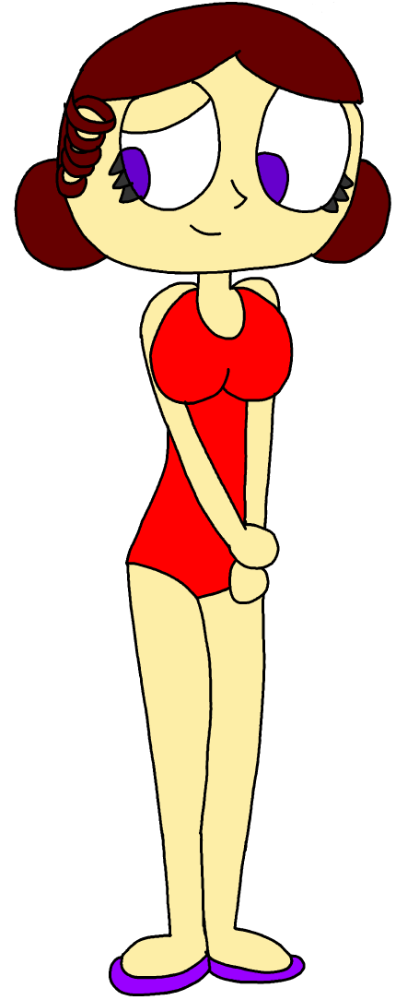

Projet Happy Planet Resort

Voici un projet motivé par la nostalgie que j'ai eu pour une chaîne qui s'appelle Piwi (Qui est de nos jours connue sous le nom de Piwi+),
Ce projet était supposé être un jeu Visual Novel Hybride (Il y aurait une histoire interactive avec des mini-jeux) dans lequel on
y trouve des personnages inspirés des 7 Mascottes de Piwi.
Histoire et contenu
Le personnage principal visiterait un village de Vacances nommée "Happy Planet Resort"
(Nommé d'après un pilote imaginé par des fans de PIWI) et sera acceuilli par Haruki Akihiro (Alias "Soleil")
rencontrera ses amis, qui sont les autres résident du village, (qui seront montré un peu plus en bas de la page). En
fait, "Happy Planet Resort" et ses alentours sont plein d'éléments surnaturels, que ce soit dans la fôret, dans le
parc d'attraction abandonné ou encore la cave dans laquelle se trouve un esprit maternel qui s'appelle "La Grand âme",
et le joueur sera confronté à des mini-jeux et à des défis et peut être même des combats, tout en développant
ses relations avec les différents personnages principaux du jeu.
Personnages
|
Haruki Akihiro (Soleil)
Haruki Akihiro (Alias Soleil) est la principale habitante de Happy Planet
et s'assure que tout se passe bien dans le village. Elle a 19 ans et est
la plus jeune du groupe, elle est gaie, optimiste, boute en train, altruiste
bien qu'excentrique et un peu folle. Elle tient le rôle le plus important,
elle adore ses amis et passer son temps avec eux, y compris le personnage
principal, bien qu'elle soit amoureuse de Peinture. Elle viendrait du Canada
et du Japon, son symbole est le Soleil
|
Sam Ross (Peinture)
Sam Ross (Alias Peinture) est le peintre et artiste
du village, il a 21 ans, il adore dessiner et peintre, étant le
membre le plus créatif et le plus calme du village.
Il suffit de lui donner un cadre et des outils et
vous dessinera quelque chose, tel qu'un personnage
ou un animal ou encore un paysage. Ses dessins sont
tellement inspirant qu'il fait des cours d'art plastique
que Soleil et Ressort prennent. Son symbole est un art-en-ciel
|
|
|
Billy Bass (Gourmand)
Billy Bass (Alias Gourmand) est le membre qui s'occupe
de la cuisine et encourage les autres à manger sainement,
bien que son alimentation est loin d'être saine (étant
donné qu'il est gros), il a également tendance à manger
beaucoup, il aime cuisiner avec peinture, bien que Gourmand
privilégie la quantité, alors que peinture privilégie la qualité.
Il a 22 ans, viens d'australie et son symbole sont les carrottes.
|
Stella VII (Etoile)
Stella la 7ème (Alias Etoile) est la plus petite habitante
en matière de taille (car malgré sa taille, elle a 22 ans), elle
est concentré sur la mode vestimentaire, elle s'habille et se comporte
comme une princesse, privilégiant les bonnes manières et aime ses amis
(Surtout Radar). A cause de sa taille, elle est confondue avec un enfant,
ce qu'elle n'apprécie pas trop. Elle prends des siestes si elle en a besoin.
Elle viendrait de l'Europe de l'Est, et son symbole sont les étoiles.
|
 |
|
Joey Doe (Radar)
Joey Doe (Alias Radar) est le collectioneur et geek
du village, il est étourdi, curieux, drôle et matérialiste,
Il adore compléter ses différentes collections, que ce soit
sa collection de peluche, de bijoux, ou encore de cartes à
collectionner avec lesquelles il adore jouer. Il lui arrive
de sortir du village pour compléter sa collection. Il adore
jouer aux jeux vidéos, il viendrait du Venezuela, a 24 ans
et son symbole sont les planètes.
|
Yunyeong Yeong-Ja (Ventouse)
Yunyeong Yeong-Ja (Alias Ventouse) Est la coach sportive
du Village, elle peut paraître comme étant la moins
amicale du groupe, mais elle n'est pas méchante. Certes
elle est dure en tant que Coach, mais elle veut seulement
faire dépasser le potentiel sportif de ses élèves (surtout Ressort)
et les soignera si l'un d'entre eux venait à se blesser. Elle
deviendra une amie proche dès que tu trouvera son côté doux.
Elle a 23 ans, Viendrait de la Corée, et son symbole est le
trèfle à quatre feuilles.
|
|
|  |
Citra Ditiyak (Ressort)
Citra Ditiyak (Alias Ressort) est l'habitante la plus
sportive et la plus grande en matière de taille et d'age,
ayant 25 ans. Malgré son age, elle est timide et a un manque
de confiance, comblé par le coaching de Ventouse, pour laquelle
elle est amoureuse et souhaite devenir sa petite amie. Elle est
très douée avec les Diabolo et le jonglage, bien qu'elle prèfère
sauter et faire des accrobaties, et adore passer du temps avec Ventouse.
Elle est Phillippin-Indonésienne, son symbole étant le coeur.
|
Public et Platforme
Bien que le public destiné à ce jeu demeure incertain, je pense qu'au moins il serait classé "Pegi 12" et au plus "Pegi 16",
Il est possible que le jeu aurait du language grossier et de la violence, et qu'il puisse prendre certains éléments d'un
jeu d'horreur, mais ce n'est pas certain. D'ailleurs, le jeu serait sur PC bien évidement.